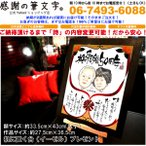

結婚50周年の金婚式お祝い贈り物。真珠婚式（30周年）など両親プレゼント等にも。感謝の筆文字
額外側サイズ ： 約 33.5cm × 43cm（太子サイズです） 作品サイズ ： 約 27.5cm × 36.5cm ■机に額を飾っていただけるように専用台をプレゼント。また壁掛けも対応！ サンプルでは結婚50周年記念の金婚式両親プレゼントを想定して掲載しておりますが、 もちろんその他の結婚祝いの記念日である、真珠婚式プレゼント結婚30周年や銀婚式プレゼント結婚25周年などなどご両親様へのプレゼントとして選ばれております。 また、長寿祝いとしても人気。 お孫様から祖父祖母へ、お子様からご両親へ、親戚の方へ上司の方へ社長へサプライズ。 結婚祝いや出産祝い。内祝い新築祝いお返しや引き出物そして、快気祝いなど 誕生日プレゼント還暦祝い60歳お祝い、古希(古稀)70歳や喜寿77歳、傘寿80歳や米寿88歳、また 卒寿の90歳祝い品、白寿の99歳、百寿100歳、 他にも定年退職や結婚記念日・金婚式・銀婚式プレゼント父の日・母の日・敬老の日などホームパーティー・忘年会・新年会・送別会 仏事・法事・法要・御供養・御供物・お盆でも ご相談やご質問は06-7493-6088までお気軽に！朝の10時から夜の10時まで対応（土日もOK）